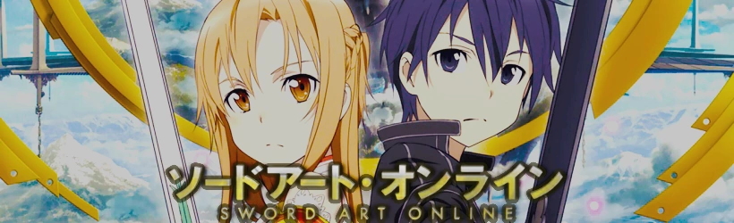

Escapar es imposible hasta terminar el juego; un game over significaría una verdadera "muerte". Sin saber la "verdad" de la siguiente generación del Multijugador Masivo Online, 'Sword Art Online(SAO)', con 10 mil usuarios unidos juntos abriendo las cortinas para esta cruel batalla a muerte. Participando solo en SAO, el protagonista Kirito ha aceptado inmediatamente la "verdad" de este MMO.Y, en el mundo del juego, un gigante castillo flotante llamado 'Aincrad', Kirito se distinguió a si mismo como un jugador solitario. Apuntando a terminar el juego al alcanzar la planta mas alta el solo continua avanzando arriesgadamente hasta que recibe una invitación a la fuerza de una guerrera y esgrimista experta, Asuna, con la cual tendra que hacer equipo..
